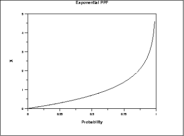
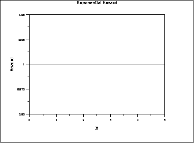
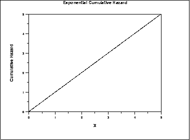
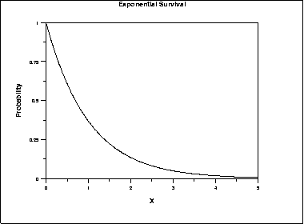
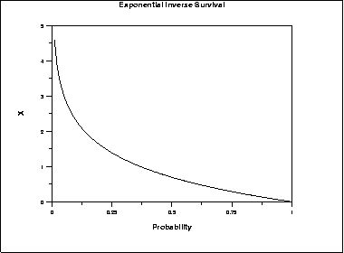

1.3. EDA Techniques
1.3.6. Probability Distributions
1.3.6.6. Gallery of Distributions
1.3.6.6.7. |
Exponential Distribution |
\( f(x) = \frac{1} {\beta} e^{-(x - \mu)/\beta} \hspace{.3in} x \ge \mu; \beta > 0 \)
where μ is the location parameter and β is the scale parameter (the scale parameter is often referred to as λ which equals 1/β). The case where μ = 0 and β = 1 is called the standard exponential distribution. The equation for the standard exponential distribution is
\( f(x) = e^{-x} \;\;\;\;\;\;\; \mbox{for} \; x \ge 0 \)
The general form of probability functions can be expressed in terms of the standard distribution. Subsequent formulas in this section are given for the 1-parameter (i.e., with scale parameter) form of the function.
The following is the plot of the exponential probability density function.

\( F(x) = 1 - e^{-x/\beta} \hspace{.3in} x \ge 0; \beta > 0 \)
The following is the plot of the exponential cumulative distribution function.

\( G(p) = -\beta\ln(1 - p) \hspace{.3in} 0 \le p < 1; \beta > 0 \)
The following is the plot of the exponential percent point function.

\( h(x) = \frac{1} {\beta} \hspace{.3in} x \ge 0; \beta > 0 \)
The following is the plot of the exponential hazard function.

\( H(x) = \frac{x} {\beta} \hspace{.3in} x \ge 0; \beta > 0 \)
The following is the plot of the exponential cumulative hazard function.

\( S(x) = e^{-x/\beta} \hspace{.3in} x \ge 0; \beta > 0 \)
The following is the plot of the exponential survival function.

\( Z(p) = -\beta\ln(p) \hspace{.3in} 0 \le p < 1; \beta > 0 \)
The following is the plot of the exponential inverse survival function.

| Mean | β |
| Median | \( \beta\ln{2} \) |
| Mode | μ |
| Range | μ to \(\infty\) |
| Standard Deviation | β |
| Coefficient of Variation | 1 |
| Skewness | 2 |
| Kurtosis | 9 |